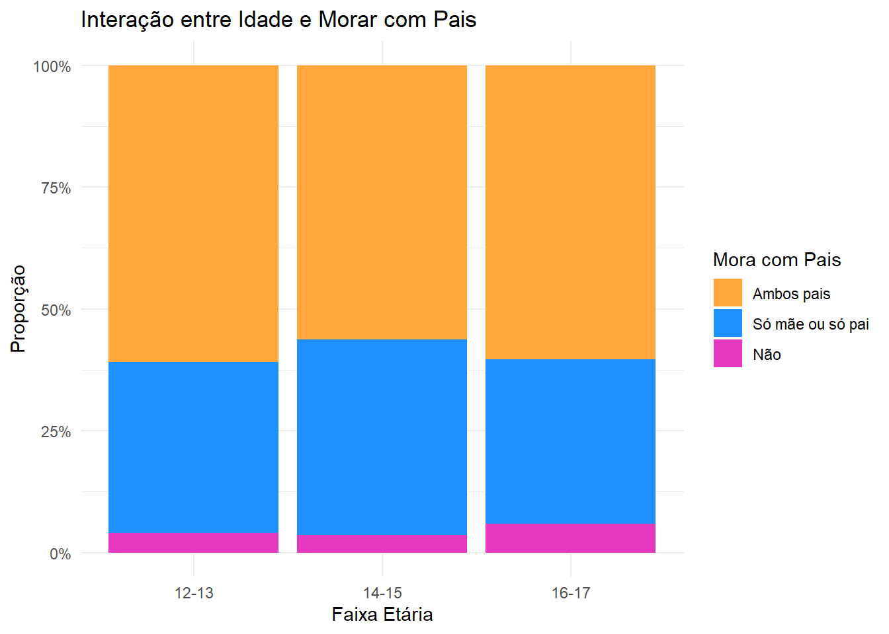

Relatorio MLG
Alunos:
Arthur Gontijo
Tomás Bernardes
1 Apresentação dos dados
O Bando de Dados utilizado nessa análise é uma versão reduzida à observações referentes ao município de Belo Horizonte, do banco de dados do Estudo dos Riscos Cardiovasculares em Adolescentes (ERICA).
O banco de dados do ERICA possui algo em torno de 500 variáveis, que avaliam as condições de saúde, perfil sócio-econômico e nutricional de estudantes entre 12 e 17 anos de escolas brasileiras, públicas e particulares. Para Belo Horizonte, temos 2530 unidades amostradas em 43 escolas.
O objetivo desta analise será avaliar o efeito diversos fatores no consumo de alcool entre estes jovens. As variaveis desta analise serão:
Variavel Resposta: catconsbebalcool - Consome bebida alcoólica (Sim, Não)
sexo - Sexo (F, M)
id_escola - Identificador da escola (43 no total)
fuma - Fuma (Sim, Não)
moracpai - Mora com os pais (Sim, Não)
bar_500 | bar_250 - Quantidade de Bares em um raio de 250m | 500m
idadecat - Categoria de Idade (12-13, 14-15, 16-17)
horatelacat - Horas de tela (1 a 7 horas por dia)
proxycat - Indicador socioeconômico (Alto, Médio, Baixo)
corcat - Cor (Branco, Branca, Preto/pardo/amarelo/indígena)
ativfiscat - Atividade física (Inativo, Ativo)
deprimido - Sensação de tristeza nas ultimas duas semanas (0-4 variando entre “Nenhuma” e “Muito mais que de costume”)
1.1 Análises Descritivas

Pelos gráficos, vemos que a proporção de jovens que consome alcool é de 27% e que não identificamos nenhuma interação significativa entre as variaveis
Um possivel fator que podera afetar a analise dos dados é a forte correlação entre as variaveis bar_X, uma vez que a quantidade de bares em um raio de 250m está incluída quando o raio é de 500m. Esta correlação esta demonstrada no gráfico abaixo
2 Ajustando Modelo
2.1 Modelo Linear Generalizado Frequentista
Tendo em vista a possível heterogeneidade entre as escolas, vamos definir um modelo linear generalizado misto com efeitos aleatórios para cada.
\[ Y_i \mid \mathbf{X}_i \sim \text{Binomial}(1, \mu_i) \]
\[ \text{logit}(\mu_i) = \eta_i \]
\[ \eta_i = \mathbf{X}_i^T \boldsymbol{\beta} + u_i \] onde \(ui\) representa o efeito aleatório de cada escola
\[ u_i \sim N(0, \sigma^2) \]
console
require(glmmTMB)
out = glmmTMB(catconsbebalcool ~ sexo + fuma +
moracpais + idadecat + horatelacat + deprimido +
proxycat + ativfiscat + (1 | id_escola),
family = binomial(link = logit),
data = dta)
summary(out) Family: binomial ( logit )
Formula:
catconsbebalcool ~ sexo + fuma + moracpais + idadecat + horatelacat +
deprimido + proxycat + ativfiscat + (1 | id_escola)
Data: dta
AIC BIC logLik deviance df.resid
2254.1 2338.9 -1112.0 2224.1 2098
Random effects:
Conditional model:
Groups Name Variance Std.Dev.
id_escola (Intercept) 0.2099 0.4581
Number of obs: 2113, groups: id_escola, 43
Conditional model:
Estimate Std. Error z value Pr(>|z|)
(Intercept) -2.23650 0.21367 -10.467 < 2e-16 ***
sexoMasculino -0.17946 0.11630 -1.543 0.122805
fumaSim 1.99754 0.43127 4.632 3.63e-06 ***
moracpaisSó mãe ou só pai 0.24272 0.11590 2.094 0.036236 *
moracpaisNão 0.53186 0.24412 2.179 0.029351 *
idadecat14-15 0.83287 0.16692 4.990 6.05e-07 ***
idadecat16-17 1.25191 0.17744 7.055 1.72e-12 ***
horatelacat>2hrs 0.25376 0.11242 2.257 0.023998 *
deprimidoNao mais que de costume 0.10886 0.14462 0.753 0.451600
deprimidoUm pouco mais que de costume 0.36782 0.14230 2.585 0.009743 **
deprimidoMuito mais que de costume 0.90087 0.19578 4.601 4.20e-06 ***
proxycatMédio -0.38631 0.12147 -3.180 0.001472 **
proxycatBaixo 0.05285 0.49136 0.108 0.914342
ativfiscatAtivo 0.41631 0.10942 3.805 0.000142 ***
---
Signif. codes: 0 '***' 0.001 '**' 0.01 '*' 0.05 '.' 0.1 ' ' 1out.glm = glm(catconsbebalcool ~ sexo + fuma +
moracpais + idadecat + horatelacat + deprimido +
proxycat + corcat + ativfiscat + (1 | id_escola),
family = binomial(link = logit),
data = dta)
cat("AIC do Modelo de Efeitos Fixos:", AIC(out.glm), "\n")AIC do Modelo de Efeitos Fixos: 2272.888 cat("AIC do Modelo de Efeitos Aleatórios:", AIC(out))AIC do Modelo de Efeitos Aleatórios: 2254.094Pode-se observar que o modelo com efeitos aleatórios provou-se melhor que o modelo de efeitos fixos.
2.2 Modelo Linear Generalizado Bayesiano
Podemos, ainda, avaliar um modelo bayesiano dado por:
\[ Y_i \mid \mathbf{X}_i, u_i \sim \text{Binomial}(1, \mu_i) \]
\[ \text{logit}(\mu_i) = \mathbf{X}_i^T \boldsymbol{\beta} + u_i \]
Com as seguintes prioris:
\[ \beta_0 \sim N(0,10) \]
\[ \beta_i \sim N(0,2.5) \]
\[ u_i \sim N(0, \sigma) \]
\[ \sigma \sim \text{Half-Cauchy}(0, 4) \] Usando o stan por meio do pacote ‘brms’, podemos ajustar o modelo:
library(brms)
priors <- c(
prior(normal(0, 10), class = "b"),
prior(normal(0, 2.5), class = "Intercept"),
# hiperparametros
prior(cauchy(0, 4), class = "sd")
)
out.stan <- brm(
formula = catconsbebalcool ~ sexo + fuma +
moracpais + idadecat + horatelacat + deprimido +
proxycat + ativfiscat + (1 | id_escola),
family = bernoulli(link = "logit"),
data = dta,
prior = priors,
iter = 3000, warmup = 1500, chains = 4
)library(brms)Loading required package: RcppLoading 'brms' package (version 2.22.0). Useful instructions
can be found by typing help('brms'). A more detailed introduction
to the package is available through vignette('brms_overview').
Attaching package: 'brms'The following object is masked from 'package:glmmTMB':
lognormalThe following object is masked from 'package:stats':
armcmc_plot(out.stan, type = "trace")No divergences to plot.Percebemos pelos gráficos que o modelo converge adequadamente.
3 Interpretação e comparação
Plotando o gráfico de odds-ratio de ambos os modelos:
library(ggplot2)
library(dplyr)
Attaching package: 'dplyr'The following objects are masked from 'package:stats':
filter, lagThe following objects are masked from 'package:base':
intersect, setdiff, setequal, unionfreq_conf <- confint(out)
freq_coefs = freq_conf[,3]
freq_data <- data.frame(
Estimate = freq_conf[,3],
Lower = freq_conf[, 1],
Upper = freq_conf[, 2],
Model = "Frequentista"
)
#removendo ultima coluna pra ficar igual
freq_data=freq_data[-15,]
bayes_conf = fixef(out.stan)[,-2]
bayes_data = data.frame(
Estimate = bayes_conf[,1],
Lower = bayes_conf[, 2],
Upper = bayes_conf[, 3],
Model = "Bayesiano"
)
rownames(bayes_data) = rownames(freq_data)
freq_data[,5] = rownames(freq_data)
bayes_data[,5] = rownames(bayes_data)
plot_data <- bind_rows(freq_data, bayes_data)
colnames(plot_data)[5] = "Term"
plot_data2 = plot_data
plot_data2[,1:3] = exp(plot_data[,1:3])
ggplot(plot_data2, aes(x = Term, y = Estimate, color = Model)) +
geom_point(position = position_dodge(width = 0.5), size = 1.5) +
scale_color_manual(values = c("Frequentista" = "coral", "Bayesiano" = "dodgerblue")) +
geom_errorbar(aes(ymin = Lower, ymax = Upper),
position = position_dodge(width = 0.5), width = 0.4) +
labs(x = "Parâmetros", y = "Estimativa", color = "Modelo") +
geom_text(aes(label = round(Estimate, 2),
vjust = ifelse(Model == "Frequentista", -0.5, 1.5)), # Conditional vjust
position = position_dodge(width = 0.5),
size = 3.5) +
theme_minimal() +
coord_flip()É possível observar pelo gráfico que as estimativas são muito parecidas entre ambos os modelos, apesar dos intervalos de estimação bayesianos aparentarem uma maior amplitude.
Com o ajuste dos modelos, é possível observar que diversas variáveis são significativas. Segue abaixo a interpretação de cada variável significativa:
Com o ajuste dos modelos, é possível observar similaridades em diversas variáveis significativas. Abaixo está a interpretação de cada uma:
Fumar: Adolescentes que fumam têm 7,37 vezes mais chances de consumir bebida alcoólica em relação aos que não fumam.
Morar com os pais: Caso morar apenas com um dos pais, aumentam-se as chances em 27%, e, caso não more com nenhum dos pais, aumentam-se as chances de consumo em 70%.
Idade: Adolescentes mais velhos (16-17 anos) são os mais propensos a consumirem bebidas, 3,5 vezes mais do que jovens entre 12-13 anos e 1,52 vezes mais do que jovens entre 14-15 anos.
Tempo de tela acima de 2 horas por dia: Adolescentes que passam mais de 2 horas por dia em frente a telas têm 29% mais chances de consumir bebida alcoólica.
Depressão: O grau de depressão de um jovem está fortemente atrelado a uma maior propensão de consumir bebidas alcoólicas, onde um jovem mais deprimido do que o costume possui 2,5 vezes mais chances de consumir álcool.
Ser fisicamente ativo: Adolescentes sedentários possuem uma chance 52% maior de consumir bebidas alcoólicas do que jovens que realizam atividade física.
Podemos avaliar a necessidade do efeito aleatório no modelo comparando-o com um efeito fixo. Utilizaremos o AIC como critério de comparação entre os modelos.
4 Capacidade preditiva do modelo
library(pROC)Type 'citation("pROC")' for a citation.
Attaching package: 'pROC'The following objects are masked from 'package:stats':
cov, smooth, varpar(mfrow=c(1,2))
predicted_values <- predict(out.stan, newdata = dta)
pi.hat = predict(out,newdata = dta, type='response')
par(mfrow=c(1,2))
plot(pROC::roc(dta$catconsbebalcool~pi.hat),print.auc=T,main ="ROC Frequentista")Setting levels: control = 0, case = 1Setting direction: controls < casesplot(pROC::roc(dta$catconsbebalcool~predicted_values[,1]),print.auc=T,main ="ROC Bayesiano")Setting levels: control = 0, case = 1
Setting direction: controls < casesAo comparar o AUC das curvas ROC, o modelo frequentista se mostra ligeiramente melhor que o modelo bayesiano.
Loading required package: kableExtraWarning: package 'kableExtra' was built under R version 4.4.2
Attaching package: 'kableExtra'The following object is masked from 'package:dplyr':
group_rows| Accuracy | Precision | Recall | F1_Score | Specificity | |
|---|---|---|---|---|---|
| Frequentista | 75.30 | 94.04 | 76.93 | 84.63 | 62.86 |
| Bayesiano | 75.69 | 94.71 | 77.03 | 84.96 | 64.73 |
Pelas métricas acima, verifica-se que os modelos perfomaram de maneira parecida, entretanto o modelo bayesiano obteve melhores resultados nas demais métricas.
5 Presupostos MLG
5.1 VIF
performance::check_collinearity(out)# Check for Multicollinearity
Low Correlation
Term VIF VIF 95% CI Increased SE Tolerance Tolerance 95% CI
sexo 1.12 [1.08, 1.19] 1.06 0.89 [0.84, 0.93]
fuma 1.01 [1.00, 5.43] 1.00 0.99 [0.18, 1.00]
moracpais 1.07 [1.03, 1.14] 1.03 0.94 [0.88, 0.97]
idadecat 1.01 [1.00, 1.34] 1.01 0.99 [0.75, 1.00]
horatelacat 1.01 [1.00, 3.00] 1.00 0.99 [0.33, 1.00]
deprimido 1.09 [1.05, 1.15] 1.04 0.92 [0.87, 0.95]
proxycat 1.06 [1.03, 1.13] 1.03 0.94 [0.88, 0.97]
ativfiscat 1.05 [1.02, 1.13] 1.03 0.95 [0.89, 0.98]Não é perceptivel nenhum valor muito elevado do VIF (>5) portanto, a multicolinearidade não está presente.
5.2 PIT
library(DHARMa)Warning: package 'DHARMa' was built under R version 4.4.2This is DHARMa 0.4.7. For overview type '?DHARMa'. For recent changes, type news(package = 'DHARMa')simulationOutput <- simulateResiduals(out, plot = FALSE)
pit_residuals <- simulationOutput$scaledResiduals
pit_df <- data.frame(residuals = pit_residuals)
n_obs_p1 <- length(pit_residuals)
n_bins <- 19
expected_p1 <- n_obs_p1 / n_bins
ci_lower_p1 <- qbinom(0.025, n_obs_p1, 1/n_bins)
ci_upper_p1 <- qbinom(0.975, n_obs_p1, 1/n_bins)
p1 <- ggplot(pit_df, aes(x = residuals)) +
geom_histogram(breaks = seq(0, 1, length.out = 20),
fill = "#ff4203",
color = "black",
alpha = 0.7) +
geom_hline(yintercept = c(ci_lower_p1, expected_p1, ci_upper_p1),
color = c("red", "black", "red"),
linetype = c("dashed", "dotted", "dashed"),
linewidth = 0.8) +
labs(title = "Residuos PIT (Frequentista)",
x = "Resíduos PIT",
y = "Frequência") +
theme_minimal()
set.seed(1234567890)
y_rep <- posterior_predict(out.stan)
y_obs <- dta$catconsbebalcool
pit_residuals_brm <- sapply(1:(length(y_obs)-417), function(i) {
if (y_obs[i] == 0) {
p0 <- mean(y_rep[, i] == 0)
runif(1, 0, p0)
} else {
p0 <- mean(y_rep[, i] == 0)
runif(1, p0, 1)
}
})
pit_brm_df <- data.frame(residuals = pit_residuals_brm)
n_obs_p2 <- length(pit_residuals_brm)
expected_p2 <- n_obs_p2 / n_bins
ci_lower_p2 <- qbinom(0.025, n_obs_p2, 1/n_bins)
ci_upper_p2 <- qbinom(0.975, n_obs_p2, 1/n_bins)
p2 <- ggplot(pit_brm_df, aes(x = residuals)) +
geom_histogram(breaks = seq(0, 1, length.out = 20),
fill = "#0f3fff",
color = "black",
alpha = 0.7) +
geom_hline(yintercept = c(ci_lower_p2, expected_p2, ci_upper_p2),
color = c("red", "black", "red"),
linetype = c("dashed", "dotted", "dashed"),
linewidth = 0.8) +
labs(title = "PIT Residuals (BRM)",
x = "Resíduos PIT",
y = "Frequência") +
theme_minimal()
gridExtra::grid.arrange(p1, p2, nrow = 1)Pelos histogramas, percebmos que os residuos aparentam serem razoavelmente normais.
5.3 QQplot residuos de pearson
y_obs = dta$catconsbebalcool
y_obs = as.numeric(y_obs)
y_obs[which(y_obs == 2)] = 0
# STAN
predicted_bayes<- predict(out.stan, type = "response")[, "Estimate"]
pearson_residuals_bayes = (y_obs - predicted_bayes) / sqrt(predicted_bayes * (1 - predicted_bayes))Warning in y_obs - predicted_bayes: longer object length is not a multiple of
shorter object lengthWarning in (y_obs - predicted_bayes)/sqrt(predicted_bayes * (1 -
predicted_bayes)): longer object length is not a multiple of shorter object
length# GLMMTMB
predicted_freq = predict(out, type="response")
pearson_residuals_freq= (y_obs - predicted_freq) / sqrt(predicted_freq * (1 - predicted_freq))Warning in y_obs - predicted_freq: longer object length is not a multiple of
shorter object lengthWarning in (y_obs - predicted_freq)/sqrt(predicted_freq * (1 -
predicted_freq)): longer object length is not a multiple of shorter object
lengthpar(mfrow = c(1, 2))
qqnorm(pearson_residuals_freq, main = "Frequentista", col = "coral")
qqline(pearson_residuals_freq, col = "#FF502F")
qqnorm(pearson_residuals_bayes, main = "Bayesiano", col = "dodgerblue")
qqline(pearson_residuals_bayes, col = "blue")Pelos gráficos vemos que, apesar das similaridades, os modelos não aparentam serem normal. O que demonstra a não adequabilidade dos residuos de pearson para modelos logisticos